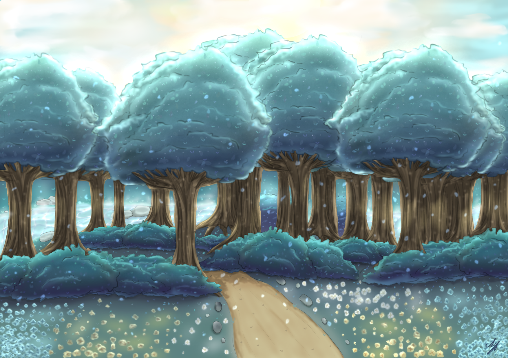

Hobby
-
Everyone has their favorite way to relax, whether it's listening to music, socializing, singing, or
watching a good movie. Personally, I prefer to be quiet and relax indoors. Drawing a picture🎨
and
playing games🎮 are my favorite ways to unwind. Whenever I feel bored or stressed, I often
spend my
time doing both of them. I find it relaxing to express my emotions through art.
Here are some of my artworks:
